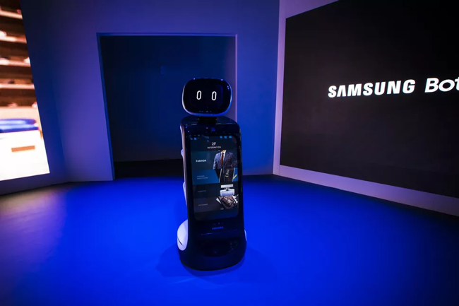
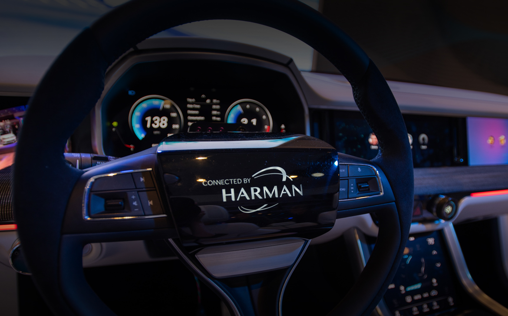

Q: Describe your experience as a core member.
A: I was a core member for about a year. Although, I was the only first year
during the first
cycle and it was after the referral recruitments that other first years joined me in the T&D. I
enjoyed the tasks given to me, because I felt special about my work. The 2nd cycle was amazing,
as I interacted with more people and being in the OC helped me understand the working of the
chapter. The advent of blog and newsletter was an amazing learning experience. Also, being a
part OC helped me interact with other people and widened my perspective.
Q: Favourites
A: Movie/ TV show- DC shows and Marvel movies.
Song- Random playlist depending upon the mood.
YouTube- Nowadays- No particular creator, depends on YouTube recommendations. Back in school-
KSI, WROTESHAW- FIFA videos
App- Headspace- It helps me to meditate
Meme- Changes every month, but this one cracks me up every time!
Q: Any incident or experience that you’d like to recount?
A: Oh well, as I mentioned earlier, I was the only core member in the
department. I use to hang
out with seniors a lot and there was this one time when a first-year approached thinking I’m a
2nd year, and I couldn’t control my laughter. It was weird yet somewhat uplifting.
Q: Name 3 random Startups.
A: Vicara – Human Augmentation
Lincodes – A GPS app that is more accurate than Google Maps
Flux auto – Self driving trucks in India
- Paurush Kumar
- Janhvi Mehta
Vesting is a legal term that refers to the
process by which authority or right along with privilege and benefit in an asset or property
passes unconditionally to a particular entity. For stocks, vesting typically refers to stock
that is earned over time which is undeniably non re-purchasable by the company.
A SAFE is an investment contract between a
startup and an investor that gives the investor a right to receive equity of the company on
certain triggering events because of which a startup company raises it’s capital in its seed
financing rounds which obviously is intended to provide a simpler mechanism for startups to seek
initial funding than convertible notes.
Post-money valuation refers to the value
after the investment from venture capitalists or angel investors have been made to the
enterprise. It is the value of the business immediately after the evaluation including both the
company's pre-money valuation and the amount it received from the investment.
An incubator firm is an organization
engaged in the business of fostering initial-stage companies through the maturing phases until
the companies have abundant financial and physical resources to function on their own.
The firm can be either a non-profit or a for-profit institution.
It is kind of financing that has both
features of debt and equity financing that provides lenders the right to convert its loan into
equity in case of a default because of which companies can access capital beyond what they're
otherwise able to achieve on a senior basis.
A corporate reorganization of a company's
capital structure, changing the mix of debt and equity. A company will usually recapitalize when
it has to exit, lower taxes or defend against a takeover.
It refers to the first official round of
financing for a startup. At this point, a company is usually raising funds for proof of concept
and to build about a prototype and is referred to as “seed stage” company.
- Janhvi Mehta
1. Proof that people are actually buying and using your product.
3. company founded by Elon Musk which manufactures flamethrowers.
2. Use something — technology, partnerships, etc. — to your advantage.
4. How you are making money — or more often, how you plan to make money.
5. merchandise for a particular start up.
- Khushee
In today’s world, every job seeker has a list of
advantages that he/she expects out of a job, keeping in mind that nothing is ideal and there will always
be a few drawbacks.
Working for a startup is on the whole a very different experience. It can be both – fruitful and risky.
It provides a unique growth opportunity and a lot of other perks for whoever considers the option of
working with a startup as their career choice. But since only one out of every three startups turns out
to be successful, working for a startup could also be very deadly.
THE PROS
Starting off with the pros of working for a startup company, startups very well know how to pull off a
favourable work environment. The employees and founders work together which helps one to get to learn
from the best. One also gets the opportunity to pick his/her own team members. When the startup company
does well and flourishes, the employees can be proud of their contributions, thus giving them job
satisfaction. In addition to this, startups provide flexible work hours, shorter work weeks and in some
cases, the employees also get to work from home. Every employee is recognised for the work he/she does
because their impact on the success of the organisation is very evident. There is no unnecessary work
done. Very less time is spent on making decisions and analysing data.
THE CONS
Moving on to the cons, one major drawback is that the salaries are lower with startups than with
traditional companies or sometimes the employees get no salary at all. This is because the investors
pump most of the funds they get into operating costs and product development. The workload is very
heavy. Employees must work around the clock with very few vacations which further leads to stress.
Startups expect one person to have plenty of duties. The job security and stability is also very poor
because the startup might just fail one day and there is a very little chance of keeping the job long
term.
One fact that should be kept in mind is that every startup is different from the other. They have odd
working hours and different benefits. Learn to be prepared for failure. It’s not that it will happen for
sure but it’s always good to be cautious and steady. But before starting it is necessary to make sure
that a proper goal is set and anybody who’s willing to contribute to the growth of the startup must
passionately work towards it. Something which is a disadvantage for one person might not be a big
problem for another. Everybody has a different opinion on whether a startup job is worth it or not.
- Priyesha Jethi
An average person thinks five or six times before buying something impromptu and half of the time,
decides against it. Customers, all over the world, are driven by research and influence. You can get
your friend to buy the florescent yellow mid length dress instead of the black short one or the white
canvas shoes instead of Nike sneakers all by telling them that they look good in it!
Social media and celebrities, like in any other field of influence, play an important role in
consumerism too. No one would buy a Salman Khan bracelet if it wasn’t his trademark. Or the Adidas
Superstar if it hadn’t come such a long way over the internet. If your product has worth, you have
social media to make it famous and trendy. If you have money, your product doesn’t need worth. Only
popular celebrities.
THE SALE
Sales and discounts are till-date the best techniques to get customers to buy products that they
wouldn’t normally buy or to get them to buy products in abundance. A high-end brand like Victoria’s
Secret, whose products cost $50 on a normal day but $15 on Black Friday, would make people take an extra
step and pinch their pockets. It’s like meeting in the middle.
THE CUSTOMERS’ SIDE
There are weird things that make people buy and not buy. A person would sit in your auto or buy crockery
from you, if they have the inner satisfaction that they bargained well. Or they won’t buy the product if
they think its too cheap to be true. Like the famous Akbar and Birbal lemonade story, they’ll think
there’s something wrong with the product too. You probably wouldn’t buy your friend’s perfume that you
absolutely love until you get it for as cheap as they did.
PANIC BUYS
When a customer buys a specific product or too much, many times they do it for emotional or mental
peace. That one candle with the scent of guest house laundry will be bought a lot by a customer if it
reminds him of a time and place in his life, if he’s emotionally attached to it. For mental peace, you
would do excessive shopping on a bad day to make yourself happy (and maybe regret it later).
Unlike clothing, accessories or cars, the one thing that will never stop selling because its no longer
cool or in trend, is food. Your college’s food court’s tempting chicken wings or the uncle’s
mouth-watering gol gappe will keep selling as long as it tastes the exact delicious.
The psychology of a customer is a lot like the psychology of marketing. When you know what they’ll buy,
you know what to sell!
- Janhvi Mehta
Though it has inspired tonnes of counterfeits,
Chanel can be
unarguably regarded as the most iconic brand in history. In 1883, a young girl called Gabrielle
Chanel came into the world.
Gabrielle’s early life
Chanel was one of 5 siblings. Due to her parents being either sick or absent for most of her
childhood, her father decided to send her and 2 of her sisters to a convent. During her time at the
convent she learned how to sew. At the age of 18 she decided to leave the convent and become the
seamstress. Along with her career as a seamstress, she spent her nights working as a showgirl with
her friends. During her time as a showgirl, she got the name the Coco.
In 1913, she met a man named Arthur who decided to invest in her store called 21 Rue Cambon. She
advertised the store by dressing up her aunt and her younger sister and sending them around the
town, with admirers of their outfits visiting the store.
Ups and Downs
21 Rue Cambon was not your typical run of the mill store. It was a primitive fashion boutique
because during those times clothes were tailored to a person’s preferences. But Coco Chanel really
made the ready-to-wear dresses a trend. At one point, she even had 4000 employees making these
dresses for her.
In 1930s, Elsa Schiaparelli came into the picture. Her distinction was that she made glamorous
evening gowns for older women. That was something that was on the flip side of Chanel’s brand. The
rising competition eventually made her lose a lot of her customers. So eventually she closed the
atelier leaving 4000 people unemployed.
It was a well known fact that Chanel was an anti-Semite. Something that stemmed from her convent
school upbringing and the upper echelon social circle that surrounded her.
In 1954, she decided to reopen her atelier. However, due to her anti-Semitic past the Parisians
ripped her apart for it. Regardless, she found loyal customers in the Americans and the British.
Although she got hefty investments from the American people, the brand was on a slow decline.
The Rise
In 1971, Coco Chanel passed away which made the brand plummet even further. However, during the fashion
revolution in the 1980s, a young man named Karl Lagerfeld became the creative director of Chanel and
used his abilities to transform the brand and stick with its eminent characteristics i.e. the Chanel
tweeds and bring it into the future. A catalyst for the brand’s resurgence was celebrity endorsements.
He used models and celebrities in every way possible to keep it relevant. Chanel really made a dent in
the industry at the 2005 The Met exhibition where it really stood out.
Under Karl Lagerfeld, the brand has made huge strides and made Chanel recognisable from a distance. In
2017, the brand made 960 crore US Dollars! He has transformed the brand into majestic, opulent and over
the top power house.
- PAURUSH KUMAR
Every year CTA organizes one of the largest exhibitions of world innovation focussing on
consumer technologies. Inaugurated on June 24, 1967 in New York, CES presents technologies with
next generation improvement from around the world. This event can be termed as the new “Tech
Gold Rush” as it is overwhelming for its audience and showcases significant development of
applied sciences. First VCR, satellite system, HDTV, Laserdisc player and almost every basic
gadget were present in earlier CES.
Some common expectations are the venue to be filled with robots, smart integrations, car
madness, screens, virtual realities and, impossible surprises.
One of the major brand Samsung showcased their technological improvement in exoskeleton and robots.
Termed by the attendees as the cute little Baymax that will monitor your medical needs.
This product is aimed at monitoring the pollution in air and purifying it.
The device is hugged around hips and supports walking.
The car madness follows and is filled with more crazy sensors and screens thus making it more interactive.
- Rashi Soni
PROCESSING
Male brains utilise nearly seven times more gray matter for activity while female brains utilise nearly
ten times more white matter.
The gray matter areas of the brain are the information-and-action processing centers of the brain. These
are localised and are responsible for the translation to a vision which particularly suggests that they
may not demonstrate sensitivity to others when they are deeply engaged in any kind of task or game.
White matter is the networking grid that connects the brain’s gray matter and other processing centers.
This is probably why you may have noticed that women tend to transition quickly between tasks while men
excel in highly task-focused projects. Both of these here, explain the title very well.
CHEMISTRY
Male and female brains process the same neurochemicals but to different degrees. Some of them are
serotonin, which helps us sit still; testosterone, estrogen and oxytocin, a bonding-relationship
chemical.
Males process less oxytocin than females which directly suggests that our boys, at times, need different
strategies for stress release and hence are generally more aggressive.
STRUCTURE
Females often have a larger human memory center. As a result, girls and women tend to input or absorb
more sensorial and emotive information than males do and retain them (The exact reason why he forgets
your birthday!)
Females tend to have verbal centers on both sides of the brain, while males tend to have them only on
the left hemisphere. This is why girls tend to use more words when describing anything. Hence, when it
comes to discussing feelings and emotions and senses together, girls are generally more interested.
ACTIVITY
The female brain often ruminates on and revisits emotional memories, unlike the male brain. This is
partly because of a greater natural blood flow throughout the brain at any given time (more white matter
processing).
Males first reflect briefly on an emotive memory, analyse it to an extent, and then move onto the next
task. They may also change course and do something that is active and unrelated to emotions. This is why
we believe that men avoid their feelings or that they move to problem-solving too soon.
Understanding all these, and more of such gender differences from a neurological perspective not only
opens the door to greater appreciation of the different genders, it also calls into question how we
parent, educate, and support our children from a young age.
- Gautam Shandilya
"Love him or hate him, but you can't ignore him". Back in 2004, Karan Johar came up with a show called Koffee with Karan. The format of the show is very straight - candidness. Actors, or more accurately, stars come on the show to talk about their personal lives. This year, in 2018-19 and the sixth season, for the first time ever, they invited cricketers on the show (or the couch as the host likes to call it) – KL Rahul, a flamboyant batsman, the other a good all-rounder in Hardik Pandya.
If you have been following the show, you’d be aware that the makers want to put words in the guests’
mouths. They want them to say things that would spark controversy and boy, doesn’t the Indian public
just adore controversy!
Karan Johar is a fantastic host and he is aware of the peculiarities of the show.
The episode of Hardik Pandya and KL Rahul was like any other Koffee with Karan episodes, where Karan
would want you to talk about the intricacies of your personal life, sex, women or men, one's fights,
love, crushes and other topics like these. It all goes very well with the audience because they are used
to watching the film industry celebs and there is an acceptance among the audience that these things or
controversial talks go hand in hand with the stars.
Cricketers like Sachin Tendulkar, Rahul Dravid and MS Dhoni have built an image that portrays cricketers
as gentlemen. And then, someone like Pandya absolutely shatters that image.
On the show, Pandya talks about his vibe with his parents. He revealed that he told them about his
different partners and his physical encounters. KL Rahul revealed that they used other teammates’ rooms
for their physical encounters and that they often partied until the morning before matches. Pandya also
made sexist remarks and has been on the receiving end of backlash. After his comments on the show,
Pandya released a statement on social media apologising for his comments on the show.
The incident has been condemned by their teammates in the Indian cricket team, with the BCCI having
launched an inquiry on the two and handing them a suspension. BCCI CEO Rahul Johri has been accused of
sexual harassment which has caused the organisation to enter a no-tolerance mode.
Ranveer Singh has also received stick for insensitive comments on Koffee with Karan in a previous
season.
With the #MeToo movement having reached its peak in India in recent times, a growing number of women are
coming out with their stories of sexual assault, and in light of that, Hardik Pandya’s comments on
Koffee with Karan have without a doubt tainted his reputation permanently.